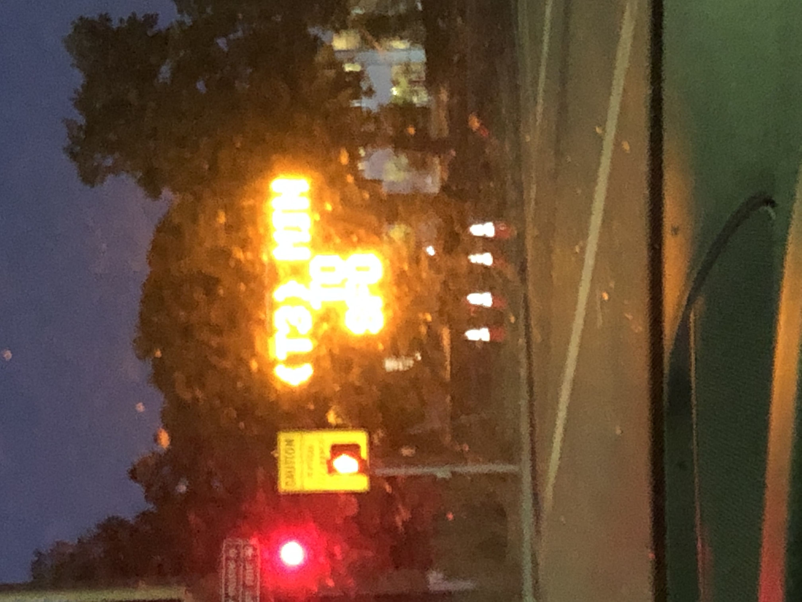

Maximilian's Portfolio
This is my portfolio.
Click here to get a fun fact about me:
About Me
My name is Maximilian Alfano-Smith and I am a rising junior at the University of California, Santa Cruz. I am currently a Computer Science Major and I am hoping to add a Computational Math Major as well in the coming school year. I have been programming since the end of my freshman year of high school and have done projects in: Java, Javascript, Python, C, C++, and Swift. My non-CS related hobbies include hiking, swimming, and the occasional video game. My latest Computer Science fascination has been Machine Learning, specifically reinforcement learning. In my free time I've been trying to develop an agent to play Kung Fu Master in OpenAI Gym to medicore success.
App Development
I spent most of my junior year of high school and a bit of my senior year of high school working on multiple iOS applications. They are sadly no longer on the App Store as I don't want to pay for the developer license now that I'm not really doing app development anymore.
The first of these applications was an app called MTG Mana Calculator that helped users with selection of land cards for their Magic the Gathering decks.

My second application was a top-down shooter called Vigilante Vengeance that I based heavily on the video game Hotline Miami. This was some of the most fun I've ever had programming as I got to go from concept to fully actualized game.

The final application I developed for iOS was an infinite runner game called Number Runner Infinity.

When you forget the f at the beginning of a f' ' in python.
